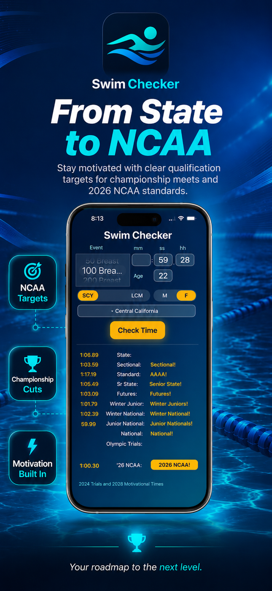
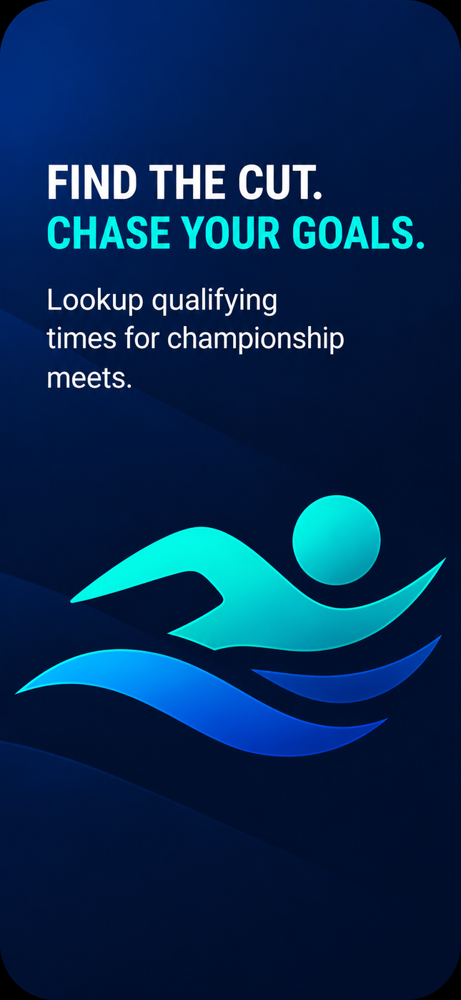
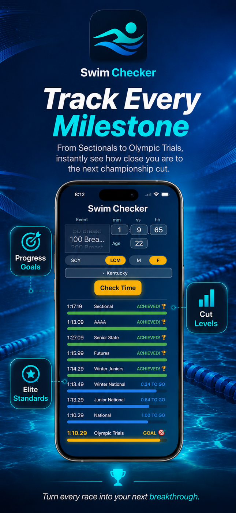
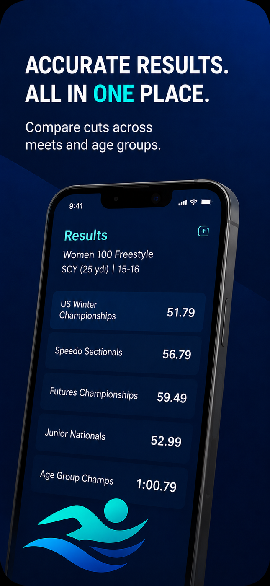

Search by event
Choose event, course, age group, and meet to find the right qualifying cut quickly.
USA Swimming Time Standards
Swim Checker helps swimmers, parents, and coaches look up qualifying times for championship meets, compare cuts, and stay current with updated standards.
Swim Checker
Lookup swim time cuts for championship qualification.

Fast. Accurate. Up to date.
Use a focused, modern interface to quickly find the standards that matter before the next championship meet.
Choose event, course, age group, and meet to find the right qualifying cut quickly.
Review championship, national, motivational, state, and LSC standards in one clean view.
Help athletes understand the time they need to qualify and track progress toward the next cut.
Includes updated USA Swimming, NCAA Division I, national meet, Metro, and Georgia standards.
App Store visuals
Four portrait marketing panels sized for App Store Connect at 1290 × 2796 px are included in the asset package.



Standards coverage
Swim Checker is made for swimmers, parents, and coaches tracking USA Swimming standards times. It includes USA Swimming Motivational Times, national meet standards, NCAA Division I standards, Metro and Georgia LSC support, 2024 Olympic Trials, and 2028 Motivational time standards.
Open in App StoreQuestions, feedback, or requests for additional LSC/state standards can be sent to the Swim Checker developer.
kenhenry64@gmail.comSwim Checker is designed as a focused utility for checking time standards. The App Store privacy label indicates that no data is collected.